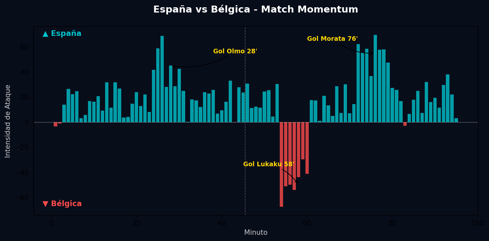
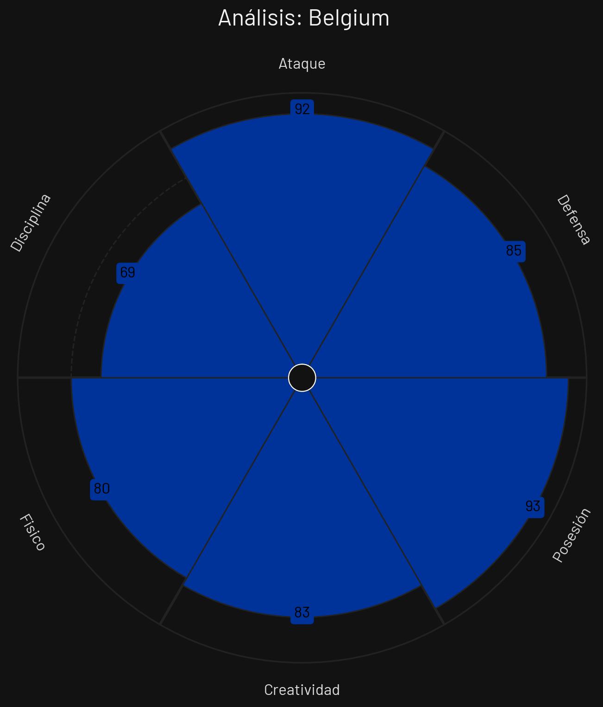

Cuartos
 Bélgica
Bélgica
España vs Bélgica
📅 2026-07-10 · 🕒 20:00 (Local)
España

2 - 1
FINALIZADO
Bélgica
📅 2026-07-10 · 🕒 20:00 (Local)
Bélgica
El choque en el césped cumplió con la expectativa táctica. España saltó a mandar, instalando a Rodri en el círculo central como el director de la sinfonía. A los 28 minutos, tras una secuencia de posesión de más de 15 pases, Lamine Yamal filtró un balón vertical exquisito para Dani Olmo, quien con una media vuelta veloz batió al guardameta belga con un disparo ajustado al palo izquierdo, decretando el 1-0.
En la segunda mitad, Domenico Tedesco movió sus fichas y Bélgica adelantó líneas. La recompensa llegó al minuto 58' tras una recuperación de Amadou Onana; Kevin De Bruyne comandó una transición letal a tres toques y cedió con precisión quirúrgica para Romelu Lukaku, quien definió cruzado con potencia para batir a Unai Simón y poner las tablas (1-1).
Lejos de desordenarse, Luis de la Fuente dio ingreso a Mikel Merino y Nico Williams para inyectar vitalidad. En el minuto 76', tras una gran proyección de Alejandro Grimaldo por el carril izquierdo, su centro medido al corazón del área fue cabeceado de forma impecable por Álvaro Morata, superando la estirada de Koen Casteels para sellar el definitivo 2-1 que desató la locura española.

El punto de inflexión decisivo del partido fue el cabezazo de Álvaro Morata en el minuto 76'. Tras el empate transitorio de Lukaku que había envalentonado al conjunto belga, el milimétrico centro de Grimaldo y el testarazo impecable de Morata devolvieron la ventaja a la Selección Española, permitiendo a la Roja dormir el balón y controlar los minutos finales sin conceder opciones de prórroga.

